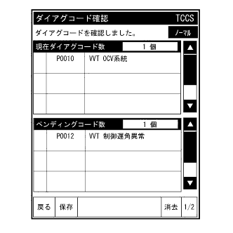
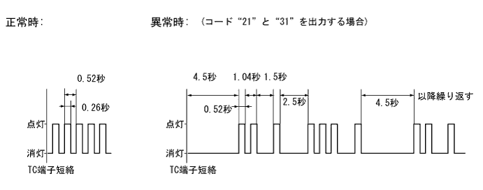
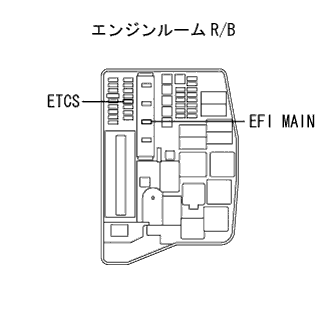
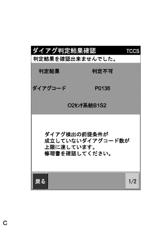

.
.EFI System (2GR-FE) DTC Check / Clear |
.Connect TaSCAN to the DLC3.
Following the SST (TaSCAN) screen display, select Main Menu [Diagnosis] → Diagnosis Menu [Powertrain] → [TCCS] → System Diagnosis Menu [Mode Change], and select normal mode or check mode.
 |
Following the SST (TaSCAN) screen display, select Main Menu [Diagnosis] → Diagnosis Menu [Powertrain] → [TCCS] → System Diagnosis Menu [DTC Freeze Frame Data], and check the DTCs.
| Display Item | Description |
|---|---|
| Number of Current DTCs | DTCs indicating current malfunctions |
| Number of Pending Codes |
|
 |
Turn IG OFF.
Using SST (diagnosis check wire No.2), connect between terminals 13 (TC) ←→ 4 (CG) of the DLC3.
Turn the IG ON and read the number of blinks of the check engine warning light.

| Base-16 | Number of Blinks |
|---|---|
| A | 10 |
| B | 11 |
| C | 12 |
| D | 13 |
| E | 14 |
| F | 15 |
Remove the SST (diagnosis check wire No. 2).
Using TaSCAN, operate according to the screen display and select a DTC recording freeze data (F displayed) from the [Diagnosis] → [DTC Check] screen.
Operate according to the screen display to display the [Diagnosis] → [DTC Freeze Data] screen, and clear the DTCs.
 |
Remove the EFI MAIN fuse (20A) and ETCS fuse (10A), and reinstall the fuses after 60 seconds or more have elapsed.
Using SST (TaSCAN), clear the DTCs.
Perform a road test to execute the diagnosis judgment check.
Following the SST (TaSCAN) screen instructions, select Main Menu [Diagnosis] → Diagnosis Menu [Powertrain] → [TCCS] → System Diagnosis Menu [Diagnosis Judgment Result Check] → [Check by DTC].
On the next screen, enter the DTC to be checked.
 |
Check the DTC judgment result.
| Display Item | Description |
|---|---|
| OK |
|
| NG |
|
| Judging |
|
| Judgment not possible |
|